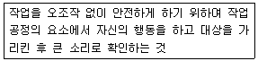
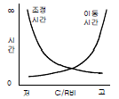
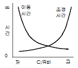
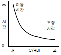
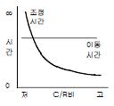
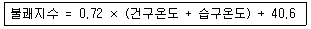
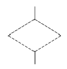
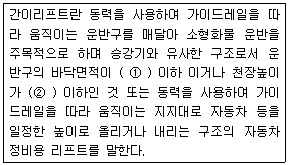
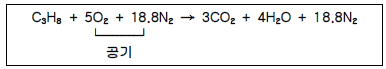
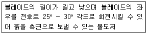

산업안전산업기사 (2013-03-10 기출문제)
1과목: 산업안전관리론
1. 다음 중 교육훈련 평가의 4단계를 올바르게 나열한 것은?
- 학습 → 반응 → 행동 → 결과
- 학습 → 행동 → 반응 → 결과
- 행동 → 반응 → 학습 → 결과
- 반응 → 학습 → 행동 → 결과
(정답률: 65%)

2. 다음 중 직무적성검사에 있어 갖추어야 할 요건으로 볼 수 없는 것은?
- 규준
- 타당성
- 표준화
- 융통성
(정답률: 82%)
3. 다음 중 산업안전보건법에 따라 안전ㆍ보건진단을 받아 안전보건개선계획을 수립ㆍ제출하도록 명할 수 있는 사업장에 해당하지 않는 것은?(관련 규정 개정전 문제로 여기서는 기존 정답인 1번을 누르면 정답 처리됩니다. 자세한 내용은 해설을 참고하세요.)
- 직업병에 걸린 사람이 연간 1명 발생한 사업장
- 산업재해발생률이 같은 업종 평균 산업재해발생률의 3배인 사업장
- 작업환경 불량, 화재ㆍ폭발 또는 누출사고 등으로 사회적 물의를 일으킨 사업장
- 산업재해율이 같은 업종의 규모별 평균 산업재해율보다 높은 사업장 중 사업주가 안전ㆍ보건조치의무를 이행하지 아니하여 발생한 중대재해 발생 사업장
(정답률: 86%)
4. 의식수준 5단계 중 의식수준의 저하로 인한 피로와 단조로움의 생리적 상태가 일어나는 단계는?
- PhaseⅠ
- PhaseⅡ
- PhaseⅢ
- PhaseⅣ
(정답률: 58%)
5. 의무안전인증 대상 보호구 중 차광보안경의 사용구분에 따른 종류가 아닌 것은?
- 보정용
- 용접용
- 복합용
- 적외선용
(정답률: 67%)
6. 다음 중 안전점검 체크리스트 작성시 유의해야 할 사항과 관계가 가장 적은 것은?
- 사업장에 적합한 독자적인 내용으로 작성한다.
- 점검 항목은 전문적이면서 간략하게 작성한다.
- 관계의 의견을 통하여 정기적으로 검토ㆍ보안 작성한다.
- 위험성이 높고, 긴급을 요하는 순으로 작성한다.
(정답률: 67%)
7. 다음 중 인간이 자기의 실패나 약점을 그럴듯한 이유를 들어 남의 비난을 받지 않도록 하며 또한 자위도 하는 방어기제를 무엇이라 하는가?
- 보상
- 투사
- 합리화
- 전이
(정답률: 87%)
8. 다음 중 재해를 분석하는 방법에 있어 재해건수가 비교적 적은 사업장의 적용에 적합하고, 특수재해나 중대재해의 분석에 사용하는 방법은?
- 개별분석
- 통계분석
- 사전분석
- 크로스(Cross)분석
(정답률: 63%)
9. 사업장 무재해 운동 추진 및 운영에 있어 무재해 목표설정의 기준이 되는 무재해 시간은 무재해 운동을 개시하거나 재개시한 날부터 실근무자수와 실근로시간을 곱하여 산정하는데 다음 중 실근로시간의 산정이 곤란한 사무직 근로자 등의 경우에는 1일 몇 시간 근무한 것으로 보는가?(관련 규정 개정전 문제로 여기서는 기존 정답인 2번을 누르면 정답 처리됩니다. 자세한 내용은 해설을 참고하세요.)
- 6시간
- 8시간
- 9시간
- 10시간
(정답률: 86%)
10. 산업안전보건법상 사업내 안전ㆍ보건교육에 있어 관리감독자 정기안전ㆍ보건교육에 해당하는 것은? (단, 산업안전보건법 및 일반관리에 관한 사항은 제외한다.)
- 정리정돈 및 청소에 관한 사항
- 작업 개시 전 점검에 관한 사항
- 작업공정의 유해ㆍ위험과 재해 예방대책에 관한사항
- 기계ㆍ기구의 위험성과 작업의 순서 및 동선에 관한사항
(정답률: 69%)
11. 상시근로자수가 75명인 사업장에서 1일 8시간씩 연간320일을 작업하는 동안에 4건의 재해가 발생하였다면 이 사업장의 도수율은 약 얼마인가?
- 17.68
- 19.67
- 20.83
- 22.8
(정답률: 72%)
12. 산업안전보건법령상 안전ㆍ보건표지 중 안내표지의 종류에 해당하지 않는 것은?
- 들것
- 세안장치
- 비상용기구
- 허가대상물질 작업장
(정답률: 65%)
13. 다음 중 산업안전보건법상 용어의 정의가 잘못 설명된 것은?
- “사업주”란 근로자를 사용하여 사업을 하는 자를 말한다.
- “근로자대표”란 근로자의 과반수로 조직된 노동조합이 없는 경우에는 사업주가 지정하는 자를 말한다.
- “산업재해”란 근로자가 업무에 관계되는 건설물ㆍ설비ㆍ원재료ㆍ가스ㆍ증기 등에 의하거나 작업 또는 그 밖의 업무로 인하여 사망 또는 부상 하거나 질병에 걸리는 것을 말한다.
- “안전ㆍ보건진단”이란 산업재해를 예방하기 위하여 잠재적 위험성을 발견하고 그 개선대책을 수립할 목적으로 고용노동부장관이 지정하는 자가 하는 조사ㆍ평가를 말한다.
(정답률: 77%)
14. 다음 중 학습지도의 원리에 해당하지 않는 것은?
- 자기활동의 원리
- 사회화의 원리
- 직관의 원리
- 분리의 원리
(정답률: 60%)
15. 다음 설명에 해당하는 위험 예지활동은?

- 지적확인
- Tool Box Meeting
- 터치 앤 콜
- 삼각위험예지훈련
(정답률: 83%)
16. 다음 중 재해의 기본원인을 4M으로 분류할 때 작업의 정보, 작업방법, 환경 등의 요인이 속하는 것은?
- Man
- Machine
- Media
- Method
(정답률: 75%)
17. 매슬로우(Maslow)의 욕구 단계 이론 중 인간에게 영향을 줄 수 있는 불안, 공포, 재해 등 각종 위험으로부터 해방 되고자 하는 욕구에 해당되는 것은?
- 사회적 욕구
- 존경의 욕구
- 안전의 욕구
- 자아실현의 욕구
(정답률: 87%)
18. 다음 중 리더십의 유효성(有效性)을 증대시키는 1차적 요소와 관계가 가장 먼 것은?
- 리더 자신
- 조직의 규모
- 상황적 변수
- 추종자 집단
(정답률: 51%)
19. 기억의 과정 중 과거의 학습경험을 통해서 학습된 행동이 현재와 미래에 지속되는 것을 무엇이라 하는가?
- 기명(memorizing)
- 파지(retention)
- 재생(recall)
- 재인(recognition)
(정답률: 67%)
20. 스트레스 주요 원인 중 마음속에서 일어나는 내적 자극요인으로 볼 수 없는 것은?
- 자존심의 손상
- 업무상 죄책감
- 현실에서의 부적응
- 대인 관계상의 갈등
(정답률: 64%)
2과목: 인간공학 및 시스템안전공학
21. 다음 중 위험처리 방법에 관한 설명으로 적절하지 않은 것은?
- 위험처리 대책 수립시 비용문제는 제외된다.
- 재정적으로 처리하는 방법에는 보유와 전가 방법이 있다.
- 위험의 제어 방법에는 회피, 손실제어, 위험분리, 책임 전가 등이 있다.
- 위험처리 방법에는 위험을 제어하는 방법과 재정적으로 처리하는 방법이 있다.
(정답률: 80%)
22. 다음 중 정보의 전달방법으로 시각적 표시장치보다 청각적 표시방법을 이용하는 것이 적절한 경우는?
- 정보의 내용이 복잡하고 긴 경우
- 정보가 시간적인 사상을 다룰 때
- 즉각적인 행동을 요구하지 않는 경우
- 정보가 공간적인 위치를 다루는 경우
(정답률: 59%)
23. 다음 중 조종-반응 비율(C/R비)에 따른 이동시간과 조정시간의 관계로 옳은 것은?




(정답률: 73%)
24. 다음 중 조도에 관한 설명으로 틀린 것은?
- 조도는 거리에 비례하고, 광도에 반비례한다.
- 어떤 물체나 표면에 도달하는 광의 밀도를 말한다.
- 1[lux] 란 1촉광의 점광원으로부터 1m 떨어진 곡면에 비추는 광의 밀도를 말한다.
- 1[fc] 란 1촉광의 점광원으로부터 1 foot 떨어진 곡면에 비추는 광의 밀도를 말한다.
(정답률: 71%)
25. 빨강, 노랑, 파랑, 화살표 등 모두 4종류의 신호등이 있다. 신호등은 한 번에 하나의 등만 켜지도록 되어 있다. 1시간동안 측정한 결과 4가지 신호등이 모두 15분씩 켜져 있었다. 이 신호등의 총 정보량은 얼마인가?
- 1 bit
- 2 bit
- 3 bit
- 4 bit
(정답률: 58%)
26. 시스템 설계 과정의 주요 단계 중 계면설계에 있어 계면설계를 위한 인간 요소 자료로 볼 수 없는 것은?
- 상식과 경험
- 전문가의 판단
- 실험절차
- 정량적 자료집
(정답률: 45%)
27. 다음 중 정량적 표시장치의 눈금 수열로 가장 인식하기 쉬운 것은?
- 1, 2, 3 …
- 2, 4, 5 …
- 3, 6, 9 …
- 4, 8, 12 …
(정답률: 78%)
28. 다음 중 부품배치의 원칙에 해당하지 않는 것은?
- 사용순서의 원칙
- 사용빈도의 원칙
- 중요성의 원칙
- 신뢰성의 원칙
(정답률: 79%)
29. 인간-기계 시스템의 구성요소에서 다음 중 일반적으로 신뢰도가 가장 낮은 요소는? (단, 관련 요건은 동일하다는 가정이다.)
- 수공구
- 작업자
- 조종장치
- 표시장치
(정답률: 71%)
30. 일반적으로 인체에 가해지는 온ㆍ습도 및 기류 등의 외적변수를 종합적으로 평가하는 데에는 “불쾌지수”라는 지표가 이용된다. 식이 다음과 같은 경우 건구온도와 습구온도의 단위로 옳은 것은?

- 실효온도
- 화씨온도
- 절대온도
- 섭씨온도
(정답률: 76%)
31. FT도에 사용되는 다음의 기호가 의미하는 내용으로 옳은 것은?

- 생략사상으로서 간소화
- 생략사상으로서 인간의 실수
- 생략사상으로서 조직자의 간과
- 생략사상으로서 시스템의 고장
(정답률: 54%)
32. 다음 중 예비위험분석(PHA)에서 위험의 정도를 분류하는 4가지 범주에 속하지 않는 것은?
- catastrophic
- critical
- control
- marginal
(정답률: 56%)
33. 다음 중 FTA를 이용하여 사고원인의 분석 등 시스템의 위험을 분석할 경우 기대 효과와 관계없는 것은?
- 사고원인 분석의 정량화 가능
- 사고원인 규명의 귀납적 해석가능
- 안전점검을 위한 체크리스트 작성 가능
- 복잡하고 대형화된 시스템의 신뢰성분석 및 안전성 분석가능
(정답률: 49%)
34. 의사결정에 있어 결정자가 각 대안에 대해 어떤 결과가 발생할 것인가를 알고 있으나, 주어진 상태에 대한 확률을 모를 경우에 행하는 의사결정을 무엇이라 하는가?
- 대립 상태 하에서 의사결정
- 위험함 상황 하에서 의사결정
- 확실한 상황 하에서 의사결정
- 불확실 상황 하에서 의사결정
(정답률: 78%)
35. 다음 중 인체계측에 있어 구조적 인체치수에 관한 설명으로 옳은 것은?
- 움직이는 신체의 자세로부터 측정한다.
- 실제의 작업 중 움직임을 계측, 자료를 취합하여 통계적으로 분석한다.
- 정해진 동작에 있어 자세, 관절 등의 관계를 3차원 디지타이저(digitizer), 모아레(Moire)법 등의 복합적인 장비를 활용하여 측정한다.
- 고정된 자세에서 마틴(Martin)식 인체측정기로 측정한다.
(정답률: 55%)
36. 다음 중 Fussell의 알고리즘을 이용하여 최소컷셋을 구하는 방법에 대한 설명으로 적절하지 않은 것은?
- OR 게이트 항상 컷셋의 수를 증가시킨다.
- AND 게이트는 항상 컷셋의 크기를 증가시킨다.
- 중복되는 사건이 많은 경우 매우 간편하고 적용하기 적합하다.
- 불대수(Boolean algebra)이론을 적용하여 시스템 고장을 유발시키는 모든 기본사상들의 조합을 구한다.
(정답률: 60%)
37. 다음 중 사고나 위험, 오류 등의 정보를 근로자의 직접 면접, 조사 등을 사용하여 수집하고, 인간-기계 시스템 요소들의 관계 규명 및 중대 작업 필요조건 확인을 통한 시스템 개선을 수행하는 기법은?
- 직무 위급도 분석
- 인간 실수율 예측기법
- 위급사건기법
- 인간 실수 자료 은행
(정답률: 43%)
38. 40phon 이 1sone 일 때 60phon 은 몇 sone 인가?
- 2 sone
- 4 sone
- 6 sone
- 100 sone
(정답률: 67%)
39. 각각 10000 시간의 수명을 가진 A, B 두 요소가 병렬로 이루고 있을 때 이 시스템의 수명은 얼마인가?(단, 요소 A, B 의 수명은 지수분포를 따른다.)
- 5000 시간
- 1000 시간
- 15000 시간
- 20000 시간
(정답률: 49%)
40. 다음 중 정신적 작업 부하에 대한 생리적 측정치에 해당하는 것은?
- 에너지대사량
- 최대산소소비능력
- 근전도
- 부정맥 지수
(정답률: 54%)
3과목: 기계위험방지기술
41. 다음 중 인력운반 작업시 안전수칙으로 적절하지 않은 것은?
- 물건을 들어 올릴 때는 팔과 무릎을 사용하고 허리를 구부린다.
- 운반 대상물의 특성에 따라 필요한 보호구를 확인, 착용한다.
- 화물에 가능한 한 접근하여 화물의 무게중심을 몸에 가까이 밀착시킨다.
- 무거운 물건은 공동 작업으로 하고 보조기구를 이용한다.
(정답률: 76%)
42. 다음 중 목재가공용 둥근톱에 설치해야 하는 분할날의 두께에 관한 설명으로 옳은 것은?
- 톱날 두께의 1.1배 이상이고, 톱날의 치진폭보다 커야한다.
- 톱날 두께의 1.1배 이상이고, 톱날의 치진폭보다 작아야 한다.
- 톱날 두께의 1.1배 이내이고, 톱날의 치진폭보다 커야한다.
- 톱날 두께의 1.1배 이내이고, 톱날의 치진폭보다 작아야 한다.
(정답률: 68%)
43. 다음 설명 중 ( )의 내용으로 옳은 것은?(관련 규정 개정전 문제로 여기서는 기존 정답인 2번을 누르면 정답 처리됩니다. 자세한 내용은 해설을 참고하세요.)

- ① 0.5m2, ② 1.0m
- ① 1.0m2, ② 1.2m
- ① 1.5m2, ② 1.5m
- ① 2.0m2, ② 2.5m
(정답률: 64%)
44. 다음 중 드릴링 작업에 있어서 공작물을 고정하는 방법으로 가장 적절하지 않은 것은?
- 작은 공작물은 바이스로 고정한다.
- 작고 길쭉한 공작물은 플라이어로 고정한다.
- 대량 생산과 정밀도를 요구할 때는 지그로 고정한다.
- 공작물이 크고 복잡할 때는 볼트와 고정구로 고정한다.
(정답률: 72%)
45. 크레인 작업시 2t 크기의 화물을 걸어 25m/s2 가속도로 감아올릴 때 로프에 걸리는 총하중은 몇 약 kN 인가?
- 16.9
- 50.0
- 69.6
- 94.8
(정답률: 46%)
46. 산업안전보건법에 따라 순간풍속이 몇 m/s 를 초과하는 바람이 불거나 중진(中震) 이상 진도의 지진이 있은 후에 옥외에 설치되어 있는 양중기를 사용하여 작업을 하는 경우에는 미리 기계 각 부위에 이상이 있는지를 점검하여야 하는가?
- 25
- 30
- 35
- 40
(정답률: 59%)
47. 다음 중 일반적으로 기계절삭에 의하여 발생하는 칩이 가장 가늘고 예리한 것은?
- 밀링
- 세이퍼
- 드릴
- 플레이너
(정답률: 60%)
48. 다음 중 왕복운동을 하는 운동부와 고정부 사이에서 형성되는 위험점인 협착점(squeeze point)이 형성되는 기계로 가장 거리가 먼 것은?
- 프레스
- 연삭기
- 조형기
- 성형기
(정답률: 58%)
49. 롤러기 방호장치의 무부하 동작시험시 앞면 롤러의 지름이 150mm 이고, 회전수가 30rpm 인 롤러기의 급정지 거리는 몇 mm 이내 이어야 하는가?
- 157
- 188
- 207
- 237
(정답률: 50%)
50. 다음 중 연삭기의 안전기준으로 틀린 것은?
- 회전 중인 연삭숫돌의 직경이 5cm 이상인 경우에는 덮개를 설치해야 한다.
- 새로운 연삭숫돌은 숫돌에 표시된 것보다 높은 회전속도(rpm)로 작동시키지 않는다.
- 탁상용 연삭기에서 위크레스트는 연삭숫돌과의 간격을 5mm 이상으로 조정할 수 있는 구조이어야 한다.
- 숫돌에 대해 최대 작동속도는 m/s로 표시되는 원주속도, rpm으로 표시되는 회전속도 두 가지 방식으로 표시된다.
(정답률: 63%)
51. 산업안전보건법령에 따라 보일러에서 압력방출장치가 2개 이상 설치될 경우, 최고사용압력 이하에서 1개가 작동하고, 다른 압력방출장치는 최고사용압력의 얼마 이하에서 작동되도록 부착하여야 하는가?
- 1.03배
- 1.⑤배
- 1.3배
- 1.5배
(정답률: 74%)
52. 가스용접용 용기를 보관하는 저장소의 온도는 몇 ℃이하로 유지해야 하는가?
- 0℃
- 20℃
- 40℃
- 60℃
(정답률: 69%)
53. 다음 중 양중기에서 사용하는 와이어로프에 관한 설명으로 틀린 것은?
- 달기 체인의 길이 증가는 제조 당시의 7% 까지 허용된다.
- 와이어로프의 지름감소가 공칭지름의 7% 초과시 사용할 수 없다.
- 훅, 샤클 등의 철구로서 변형된 것은 크레인의 고리걸이용구로 사용하여서는 아니 된다.
- 양중기에서 사용되는 와이어로프는 화물 하중을 직접 지지하는 경우 안전계수를 5 이상으로 해야 한다.
(정답률: 60%)
54. 다음 중 선반(lathe)의 방호장치에 해당하는 것은?
- 슬라이딩(sliding)
- 삼압대(tail stock)
- 주축대(head stock)
- 칩브레이커(chip breaker)
(정답률: 59%)
55. 급정지기구가 있는 1행정 프레스에서의 광전자식 방호장치에서 광선에 신체의 일부가 감지된 후로부터 급정지기구의 작동시까지의 시간이 40ms이고, 급정지기구의 작동 직후로부터 프레스기가 정지될 때까지의 시간이 20ms라면 안전거리는 몇 mm 이상이어야 하는가?
- 60
- 76
- 80
- 96
(정답률: 48%)
56. 다음 중 프레스의 방호장치 기준에 관한 설명으로 틀린것은?
- 손쳐내기식 방호장치에서 방호판의 폭은 금형폭의 1/2 이내로 하여야 한다.
- 양수조작식 방호장치에서 누름버튼의 상호간 내측 거리는 300mm 이상이어야 한다.
- 수인식 방호장치에서 수인끈의 재료는 합성섬유로 직경이 4mm 이상이어야 한다.
- 손쳐내기식 방호장치에서 손쳐내기봉의 행정(Stroke) 길이를 금형의 높이에 따라 조정할 수 있고 진동폭은 금형폭 이상이어야 한다.
(정답률: 50%)
57. 다음 중 컨베이어(conveyer)의 역전방지장치 형식이 아닌 것은?
- 라쳇식
- 전기브레이크식
- 램식
- 로울러식
(정답률: 58%)
58. 지게차가 무부하 상태로 25km/h로 이동 중에 있을 때 좌우 안정도는 약 얼마인가?
- 16.5%
- 25.0%
- 37.5%
- 42.5%
(정답률: 48%)
59. 다음 중 작업장에 대한 안전조치 사항으로 틀린 것은?
- 상시통행을 하는 통로에는 75럭스 이상의 채광 또는 조명시설을 하여야 한다.
- 산업안전보건법으로 규정된 위험물질을 취급하는 작업장에 설치하여야 하는 비상구는 너비 0.75m이상, 높이 1.5m 이상이어야 한다.
- 높이가 3m를 초과하는 계단에는 높이 3m 이내마다 너비 90cm 이상의 계단참을 설치하여야 한다.
- 상시 50명 이상의 근로자가 작업하는 옥내 작업장에는 비상시 근로자에게 신속하게 알리기 위한 경보용 설비를 설치하여야 한다.
(정답률: 61%)
60. 한계하중 이하의 하중이라도 고온조건에서 일정 하중을 지속적으로 가하며 시간의 경과에 따라 변형이 증가하고 결국은 파괴에 이르게 되는 현상을 무엇이라 하는가?
- 크리프(creep)
- 피로현상(fatigue limit)
- 가공 경화(stress hardening)
- 응력 집중(stress concentration)
(정답률: 51%)
4과목: 전기 및 화학설비위험방지기술
61. 다음 중 감전에 영향을 미치는 요인으로 통전경로별 위험도가 가장 높은 것은?
- 왼손 - 등
- 오른손 - 가슴
- 왼손 - 가슴
- 오른손 - 등
(정답률: 80%)
62. 제1종 접지공사에 사용하는 접지선을 사람이 접촉할 우려가 있는 곳에 시설하는 경우에는 접지극은 지하 몇 cm 이상 매설하여야 하는가?
- 30cm
- 50cm
- 75cm
- 100cm
(정답률: 67%)
63. 다음 중 글로우 코로나(Glow Corona)에 대한 설명으로 틀린 것은?
- 전압이 2000V 정도에 도달하면 코로나가 발생하는 전극의 끝단에 자색의 광점이 나타난다.
- 회로에 예민한 전류계가 삽입되어 있으면, 수 μA정도의 전류가 흐르는 것을 감지할 수 있다.
- 전압을 상승시키면 전류도 점차로 증가하여 스파크 방전에 의해 전극간이 교락된다.
- Glow Corona 는 습도에 의하여 큰 영향을 받는다.
(정답률: 56%)
64. 우리가 일반적으로 사용하는 전압인 교류 220V 전로에 사용하는 절연전선의 절연저항값의 기준으로 옳은 것은?
- 0.1MΩ 이상
- 0.2MΩ 이상
- 0.3MΩ 이상
- 0.4MΩ 이상
(정답률: 64%)
65. 다음 중 전기기기의 불꽃 또는 열로 인해 폭발성 위험 분위기에 점화되지 않도록 컴파운드를 충전해서 보호한 방폭구조는?
- 몰드 방폭구조
- 비점화 방폭구조
- 안전등 방폭구조
- 본질안전 방폭구조
(정답률: 61%)
66. 다음 중 정전기 재해의 방지대책으로 가장 적절한 것은?
- 절연도가 높은 플라스틱을 사용한다.
- 대전하기 쉬운 금속은 접지를 실시한다.
- 작업장 내의 온도를 낮게 해서 방전을 촉진시킨다.
- (+), (-)전하의 이동을 방해하기 위하여 주위의 습도를 낮춘다.
(정답률: 70%)
67. 다음 중 220V 회로에서 인체 저항이 550Ω 인 경우 안전 범위에 들어갈 수 있는 누전차단기의 정격으로 가장 적절한 것은?
- 30mA, 0.03초
- 30mA, 0.1초
- 50mA, 0.2초
- 50mA, 0.3초
(정답률: 70%)
68. 다음 중 가스ㆍ증기방폭구조인 전기기기의 일반성능 기준에 있어 인증된 방폭기기에 표시하여야 하는 사항과 가장 거리가 먼 것은?
- 해당 방폭구조 기호
- 해당 방폭구조의 형상
- 방폭기기를 나타내는 기호
- 제조자 이름이나 등록상표
(정답률: 52%)
69. 다음 중 누전화재라는 것을 입증하기 위한 요건이 아닌것은?
- 누전점
- 발화점
- 접지점
- 접속점
(정답률: 54%)
70. 산업안전보건법상 누전에 의한 감전의 위험을 방지하기 위하여 접지를 하여야 하는 부분으로 고정 설치되거나 고정 배선에 접속된 전기기계ㆍ기구의 노출된 비충전 금속체 중 충전될 우려가 있는 접지 대상에 해당하지 않는 것은?
- 사용전압이 대지전압 75볼트를 넘는 것
- 물기 또는 습기가 있는 장소에 설치되어 있는 것
- 금속으로 되어 있는 기기접지용 전선의 피복ㆍ외장 또는 배선관
- 지면이나 접지된 금속체로부터 수직거리 2.4m, 수평거리 1.5m 이내인 것
(정답률: 47%)
71. 산화성물질을 가연물과 혼합할 경우 혼합위험성 물질이 되는데 다음 중 그 이유로 가장 적당한 것은?
- 산화성물질에 조해성이 생기기 때문이다.
- 산화성물질이 가연성물질과 혼합되어 있으면 주수 소화가 어렵기 때문이다.
- 산화성물질이 가연성물질과 혼합되어 있으면 산화ㆍ환원반응이 더욱 잘 일어나기 때문이다.
- 산화성물질과 가연물이 혼합되어 있으면 가열ㆍ마찰ㆍ충격 등의 점화에너지원에 의해 더욱 쉽게 분해하기 때문이다.
(정답률: 57%)
72. 메탄 20vol%, 에탄 25vol%, 프로판 55vol% 의 조성을 가진 혼합가스의 폭발하한계 값(vol%)은 약 얼마인가?(단, 메탄, 에탄, 프로판가스의 폭발하한값은 각각 5vol%, 3vol%, 2vol% 이다.)
- 2.51
- 3.12
- 4.26
- 5.22
(정답률: 52%)
73. 다음 중 F, Cl, Br 등 산화력이 큰 할로겐 원소의 반응을 이용하여 소화(消火)시키는 방식을 무엇이라 하는가?(오류 신고가 접수된 문제입니다. 반드시 정답과 해설을 확인하시기 바랍니다.)
- 희석식 소화
- 냉각에 의한 소화
- 연료 제거에 의한 소화
- 연소 억제에 의한 소화
(정답률: 53%)
74. 다음 중 폭굉(detonation) 현상에 있어서 폭굉파의 진행 전면에 형성되는 것은?
- 증발열
- 충격파
- 역화
- 화염의 대류
(정답률: 75%)
75. 산업안전보건법령상 공정안전보고서에 포함되어야 하는 사항 중 공정안전자료의 세부내용에 해당하는 것은?
- 주민홍보계획
- 안전운전지침서
- 위험과 운전 분석(HAZOP)
- 각종 건물ㆍ설비의 배치도
(정답률: 57%)
76. 다음 중 산업안전보건법령상의 위험물질의 종류에 있어 산화성 액체 및 산화성 고체에 해당하지 않는 것은?
- 요오드산
- 브롬산 및 그 염류
- 유기과산화물
- 염소산 및 그 염류
(정답률: 58%)
77. 다음 중 반응기의 운전을 중지할 때 필요한 주의사항으로 가장 적절하지 않는 것은?
- 급격한 유량 변화, 압력 변화, 온도 변화를 피한다.
- 가연성 물질이 새거나 흘러나올 때의 대책을 사전에 세운다.
- 개방을 하는 경우, 우선 최고 윗부분, 최고 아래 부분의 뚜껑을 열고 자연통풍 냉각을 한다.
- 잔류물을 제거한 후에는 먼저 물, 온수 등으로 세정한 후 불활성가스에 의해 잔류가스를 제거한다.
(정답률: 57%)
78. 다음 중 인화성 액체의 취급시 주의사항으로 가장 적절하지 않은 것은?
- 소포성의 인화성액체의 화재시에는 내알콜포를 사용한다.
- 소화작업시에는 공기호흡기 등 적합한 보호구를 착용하여야 한다.
- 일반적으로 비중이 물보다 무거워서 물 아래로 가라 앉으므로, 주수소화를 이용하면 효과적이다.
- 화기, 충격, 마찰 등의 열원을 피하고, 밀폐용기를 사용하며, 사용상 불가능한 경우 환기장치를 이용한다.
(정답률: 64%)
79. 다음 중 화학공정에서 반응을 시키기 위한 조작 조건에 해당되지 않는 것은?
- 반응 높이
- 반응 농도
- 반응 온도
- 반응 압력
(정답률: 70%)
80. 다음 반응식에서 프로판가스의 화학양론 농도는 약 얼마인가?

- 8.04vol%
- 4.02vol%
- 20.4vol%
- 40.8vol%
(정답률: 53%)
5과목: 건설안전기술
81. 포화도 80%, 함수비 28%, 흙 입자의 비중 2.7일 때 공극비를 구하면?
- 0.940
- 0.945
- 0.950
- 0.955
(정답률: 60%)
82. 비계 등을 조립하는 경우 강재와 강재의 접속부 또는 교차부를 연결시키기 위한 전용철물은?
- 클램프
- 가새
- 턴버클
- 샤클
(정답률: 60%)
83. 거푸집에 작용하는 하중 중에서 연직하중이 아닌 것은?
- 거푸집의 자중
- 작업원의 작업하중
- 가설설비의 충격하중
- 콘크리트의 측압
(정답률: 70%)
84. 아래에서 설명하는 불도저의 명칭은?

- 틸트 도저
- 스트레이트 도저
- 앵글 도저
- 터나 도저
(정답률: 71%)
85. 콘크리트 타설 시 안전수칙으로 옳지 않은 것은?
- 콘크리트 콜드조인트 발생을 억제하기 위하여 한 곳 부터 집중타설 한다.
- 타설 순서 및 타설속도를 준수한다.
- 콘크리트 타설 도중에는 동바리, 거푸집 등의 이상유무를 확인하고 감시인을 배치한다.
- 진동기의 지나친 사용은 재료분리를 일으킬 수 있으므로 적절히 사용하여야 한다.
(정답률: 78%)
86. 토사붕괴를 예방하기 위한 굴착면의 기울기 기준으로 옳지 않은 것은?(2021년 11월 19일 변경된 규정 적용됨)
- 습지 1:1 ~ 1:1.5
- 건지 1:0.5 ~ 1:1
- 풍화암 1:0.8
- 연암 1:1.0
(정답률: 66%)
87. 철골용접 작업자의 전격 방지를 위한 주의사항으로 옳지 않은 것은?
- 보호구와 복장을 구비하고, 기름기가 묻었거나 젖은 것은 착용하지 않을 것
- 작업 중지의 경우에는 스위치를 떼어 놓을 것
- 개로 전압이 높은 교류 용접기를 사용할 것
- 좁은 장소에서의 작업에서는 신체를 노출시키지 않을 것
(정답률: 76%)
88. 현장 안전점검 시 흙막이 지보공의 정기점검 사항과 가장 거리가 먼 것은?
- 부재의 손상ㆍ변형ㆍ부식ㆍ변위 및 탈락의 유무와 상태
- 부재의 설치방법과 순서
- 버팀대의 긴압의 정도
- 부재의 접속부ㆍ부착부 및 교차부의 상태
(정답률: 55%)
89. 건물 외벽의 도장작업을 위하여 섬유로프 등의 재료로 상부지점에서 작업용 발판을 매다는 형식의 비계는?
- 달비계
- 단관비계
- 브라켓비계
- 이동식 비계
(정답률: 65%)
90. 철골작업 시 폭우와 같은 악천후에 작업을 중지하여야 하는 강우량 기준은?
- 1시간당 1mm 이상 일 때
- 2시간당 1mm 이상 일 때
- 3시간당 2mm 이상 일 때
- 4시간당 2mm 이상 일 때
(정답률: 78%)
91. 강관틀비계를 조립하여 사용하는 경우 벽이음의 수직방향 조립간격은?
- 2m 이내마다
- 5m 이내마다
- 6m 이내마다
- 8m 이내마다
(정답률: 44%)
92. 이동식비계를 조립하여 작업을 하는 경우에 준수해야할 사항과 거리가 먼 것은?
- 비계의 최상부에서 작업을 할 때에는 안전난간을 설치할 것
- 작업발판의 최대적재하중은 250kg을 초과하지 않도록 할 것
- 승강용 사다리는 견고하게 설치할 것
- 지주부재와 수평면과의 기울기를 75° 이하로 하고, 지주부재와 지주부재 사이를 고정시키는 보조부재를 설치할 것
(정답률: 47%)
93. 유해위험 방지계획서 제출 대상 공사에 해당하는 것은?
- 지상 높이가 21m인 건축물 해체공사
- 최대지간 거리가 50m인 교량의 건설공사
- 연면적 5,000m2인 동물원 건설공사
- 깊이가 9m인 굴착공사
(정답률: 62%)
94. 추락에 의한 위험을 방지하기 위한 안전방망의 설치기준으로 옳지 않은 것은?
- 안전방망의 설치위치는 가능하면 작업면으로부터 가까운 지점에 설치할 것
- 건축물 등의 바깥쪽으로 설치하는 경우 망의 내민 길이는 벽면으로부터 2m 이상이 되도록 할 것
- 안전방망은 수평으로 설치하고, 망의 처짐은 짧은 변 길이의 12% 이상이 되도록 할 것
- 작업면으로부터 망의 설치지점까지의 수직거리는 10m를 초과하지 아니할 것
(정답률: 42%)
95. 물체의 낙하ㆍ충격, 물체에의 끼임, 감전 또는 정전기의 대전에 의한 위험이 있는 작업 시 공통으로 근로자가 착용하여야 하는 보호구로 적합한 것은?
- 방열복
- 안전대
- 안전화
- 보안경
(정답률: 66%)
96. 다음 중 굴착기의 전부장치에 해당하지 않는 것은?
- 붐(Boom)
- 암(Arm)
- 버킷(Bucket)
- 블레이드(Blade)
(정답률: 64%)
97. 화물자동차에서 짐을 싣는 작업 또는 내리는 작업을 할 때 바닥과 짐 윗면과의 높이가 최소 얼마 이상이면 승강설비를 설치해야 하는가?
- 1m
- 1.5m
- 2m
- 3m
(정답률: 57%)
98. 철골보 인양작업 시 준수사항으로 옳지 않은 것은?
- 인양용 와이어로프의 체결지점은 수평부재의 1/4지점을 기준으로 한다.
- 인양용 와이어로프의 매달기 각도는 양변 60°를 기준으로 한다.
- 흔들리거나 선회하지 않도록 유도 로프로 유도한다.
- 후크는 용접의 경우 용접규격을 반드시 확인한다.
(정답률: 62%)
99. 사질지반에 흙막이를 하고 터파기를 실시하면 지반수위와 터파기 저면과의 수위차에 의해 보일링현상이 발생할 수 있다. 이때 이 현상을 방지하는 방법이 아닌 것은?
- 흙막이 벽의 저면타입깊이를 크게 한다.
- 차수성이 높은 흙막이벽을 사용한다.
- 웰포인트로 지하수면을 낮춘다.
- 주동토압을 크게한다.
(정답률: 45%)
100. 크레인의 와이어로프가 일정 한계 이상 감기지 않도록 작동을 자동으로 정지시키는 장치는?
- 훅해지장치
- 권과방지장치
- 비상정지장치
- 과부하방지장치
(정답률: 60%)
이는 교육훈련 평가의 4단계인 반응, 학습, 행동, 결과를 올바르게 나열한 것이다.
- 반응: 교육을 받은 대상자들이 교육에 대한 반응을 어떻게 보이는지를 평가한다.
- 학습: 교육을 받은 대상자들이 실제로 얼마나 학습했는지를 평가한다.
- 행동: 교육을 받은 대상자들이 학습한 내용을 실제 업무에 적용하는지를 평가한다.
- 결과: 교육을 통해 얻은 결과가 조직의 목표에 얼마나 기여하는지를 평가한다.
따라서, 교육을 통해 원하는 목표를 달성하기 위해서는 이 4단계를 순서대로 평가하고 개선해 나가는 것이 중요하다.